DMV Universe
John Staton's words about America Jones and the Not-Too-Distant-Dystopian-Cyberpunk-Future. From his DeviantArt posts and comment threads, 2008 through 2016.
01The Pitchexpand_more
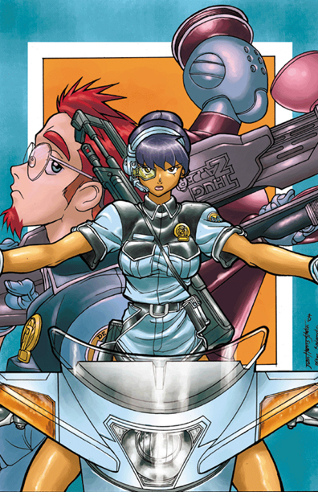
The year is 2076. The nation's tricentennial. The heroine is named America. John's proposed slogan: "It's 2076, do you know where your car is?"
He never settled on a name for the setting itself. He tried abbreviating it at least four ways; NTDDCF, NTDCDF, NTCCDF, and just "NTDCD future". None of them stuck. As he put it: "Hmmm that might work better than 'Not-too-distant-dystopian-cyberpunk-future', which doesn't even lend itself to am acronym. (NTDDCF? See what I mean?)" A fan suggested "Noted, Chief" and John called it "actually cute. Certainly more than I was able to come up with."1
The pitch itself came from a piece called DMV a' la FLCL, posted November 7, 2008:
The woman on the futuristic scooter if AJ, the not-too-distant-dystopian-future's toughest, most badass meter maid. The red headed dude is her partner, Drew, the not-too-distant-dystopian-future's least badass meter maid.
They patrol the Megarage, the pinnacle of multi-level parking structures, and almost a city unto itself; and they fight ( At least AJ does.) corporate sponsored youth gangs; highly armed criminally, desperate car pools; and coin operated robots who dispense the not-too-distant-dystopian-future's most pernicious illicit substance--coffee.
Anyone whose ever known me has suffered under the extremely long held belief that I will eventual produce a comic, or cartoon, or series of cocktail napkin sketches containing this bizarre concept. To date I mostly have a lot of promisory notes in the form of drawings like this one.2
- ↑ From Rifle Maid comments (May 2010).
- ↑ From DMV a' la FLCL (Nov 7, 2008).
02The Worldexpand_more
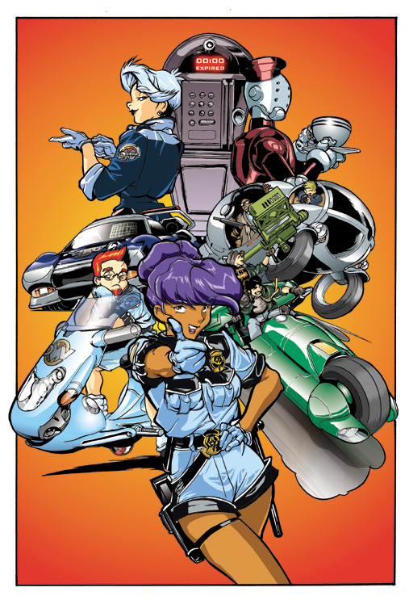
Why Parking Matters
The entire economy of the DMV future runs on parking. John laid out the stakes in Dueling Swords:
The most valuable thing in the DMV not-too-distant-cyberpunk-dystopian-future is a 6 x 3 meter rectangle of road surface watched over by a cycloptic parking meter and delineated by two inch wide lines of paint. These simple slivers of territory are easily worth a man's life --especially during rush hour! When the spaces become scarce, ritualized combat begins.1
The logic is simple. You can earn your share of food, water, and natural resources; you just have to show up on time for work. "Thus the demand for parking space." And from there, things got worse. By 2016, John had refined the escalation: carpools had evolved into armed gangs, even unaffiliated drivers settled disputes with violent means, and meter maids had to be armed just to do their jobs. Perps were by no means "occasional." As he put it: "In fact, there will be need for bigger weapons in the future. The 'not-to-distant-dystopic-cyberpunk-future' future."2
The Megarage
John called it "the pinnacle of multi-level parking structures, and almost a city unto itself." Elsewhere he described AJ wandering into "the mighty Megarage." When a fan suggested teleportation would solve the parking problem, John pointed out that would negate the need for 50 story parking garages, and besides, it was "far beyond the technology in the story. 😜"3
Coffee Is Illegal
In the FLCL pitch, the coin-operated robots dispense "the not-too-distant-dystopian-future's most pernicious illicit substance--coffee." The DMV and the GHP both raid coffee houses; as John wrote in All Gangs Here, "In the NTDCD future you see--coffee is illegal."4
The Law
Future police are banned from using lethal weapons. Their arsenal consists entirely of incapacitation gear: Thug Zappers, Roboots, and the standard-issue PTD.5
Animals are also banned from law enforcement. John gave this one a full explanation:
All the duties once performed by dogs are done by spunky l'il robots in the NTDDCF. The exposure of animals to harmful situations like explosives detection is considered barbaric by the more evolved denizens of the future.
The "K-9's" employed are more like Doctor Who's old robotic sidekick--only, you know, called something else, since I don't have any rights to that name. 😅6
The Tone
John set one ground rule for the violence: "Even though firearms will be used with dizzying frequency, almost no one will ever get hurt or die. You, know, like in the old G.I. Joe cartoon. 😄"7
The Vibe
Anime was cyberpunk to John. He loved Akira, Dominion, Ghost in the Shell, Bubblegum Crisis: futures that weren't full of magic technology, where ordinary bums still had to rise up and solve problems. He thought those worlds, despite being full of cyborgs and sentient machines, "always felt more authentic."8
His one-line summary of the NTDDCF: "Spaceflight, flying cars, light-up umbrella handles, and all of the street-crime and political corruption of home. 😉"9
When pressed on what it actually looked like, John painted a picture in the Silent Mobius Kiddy description:
If the aforementioned claptrap is put before a Syd Mead-esque skyline, dotted by crushing multitudes of luminous, crystal-faceted sky scrapers, and swarmed by levitating traffic jams of flying cars and bill-board zeppelins;I might give it a second look.
*In other words the "Not-too-distant-cyberpunk-dystopian-future!" My second favorite fictional backdrop.10
A British fan called AJ a "Traffic Warden." John was charmed:
"Traffic Warden?" 😮
That actually sounds cooler than "Meter Maid". Perhaps I should have set the story in England. (Then I could name the heroine, "Rita". 🤣)11
The Cover Blurb
John had a friend who was particularly anti-authoritarian. One time, talking about cop-and-robber movies, the friend dismissed the whole genre as "The glorification of armed bureaucrats." John's response: "I plan on using that quote as a cover blurb. 😄"12
- ↑ From DMV: Dueling Swords (Dec 12, 2008).
- ↑ Escalation details from Car and Driver comments (Aug 2016). "Occasional" line from Rifle Maid comments (May 2010).
- ↑ From Future of Parking Enforcement comments (Dec 2008).
- ↑ From DMV: All Gangs Here (Jan 2, 2009).
- ↑ From Car and Driver comments (Aug 2016).
- ↑ From Rifle Maid comments (June 2010).
- ↑ From Repeat comments (Oct 2010).
- ↑ From Future of Parking Enforcement comments (Dec 3, 2008).
- ↑ From Rifle Maid comments.
- ↑ From Silent Mobius Kiddy (Mar 7, 2009).
- ↑ From Rifle Maid comments (June 2010).
- ↑ From PTD Color comments (Nov 2010).
03America Jonesexpand_more
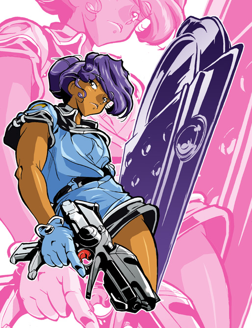
Her name is America Jones. She gets really pissed when you call her "Miss America." ("It's America. 🙄 That's why she gets pissed when she's called 'Miss America.'") When a fan suggested the name "Columbia," John shut it down: "Anyway, with 'Columbia', it would be CJ."1
Her physical template was Nichelle Nichols. John didn't set out to create a sex symbol; he "just wanted to create an ass kicking meter-maid." He supposed it was "ultimately my fault for using Nichelle Nichols as the physical template for the character. 🤷" She has dark skin and purple hair. Her demeanor is "one shot per customer"; she is "nothing if not a stickler for regulations." She handles the PTD with one hand, shooting from the hip, like a frontier gunfighter.2
Her guns keep changing. John noticed it himself and decided to lean into it:
Yes, her gun is different here than the revolver style piece she's carrying in the previous picture.
I think I designed a different pistol each time I drew the character.😅
I might use that to my advantage in the story at some point.
Some other character whose sole purpose is to provide a straight line: "Weren't you carrying a Revolver yesterday?"
AJ: "Yes, but today is Thursday." 😜3
The ticket dispenser changed too. He acknowledged it in the AJ Pencils description: "You'll note her ticket dispenser is slightly different here. I'm going to have to sit down and actually commit to a design one of these days. (Hmmm, maybe I'll just say she owns 50 slightly different ones.)"4
He didn't design AJ with a mind toward drawing "the sexy girl," but people reacted to her as a sex symbol anyway. "Guess I'm just too used to drawing 'that kind of girl.' Of course, I may have overcorrected with Repeat. 😅" On the subject of real-world meter maids: "The worse news is, cute meter maids occur only in this gallery, and the occasional movie. (I loved that scene with Elizabeth Hurley in 'Bedazzled'. Come to think of it, I loved every scene with Elizabeth Hurley in 'Bedazzled'.)"5
To bandeau, on fashion expertise: "I'm always impressed by your ability to connect an article of clothing with a certain era. I've think we've discussed before that I can do that with cars, but I'm lost with women's fashion. Between you, me, the keyboard, and probably a lurker or two, the primary focus of my attention were women's fashion is concerned is what part of the body is shown off."6
Her Dragonball Z scouter eyepiece came from Enter the Heroine: "I imagine her 'Dragonball Z' eyepiece should win me a few more props for bein' all 'retro'. 😜" Fan SuichiTanaka then suggested the scouter could measure parking debt from a central database. John: "Ha! That's an awesome idea!"
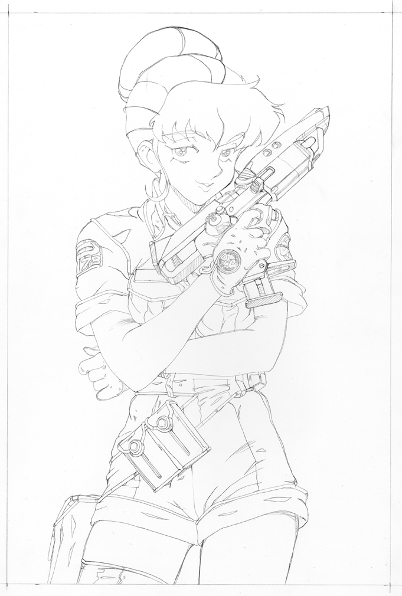
The Uniform
The uniform evolved over time. In Maid and Machine (July 2010), he gave AJ a day-glo vest and low belt with bike pants; the belt and pants were suggested by bandeau. He'd been thinking about the vest for months:
I am giving some thought to changing her uniform. I've noticed that meter maids nowadays wear day-glo vests--sort of like what deer hunters wear, only yellow as opposed to orange.
I was considering giving AJ, and her less tough comrades, a bullet-proof version of such a garment. I suppose, since this is the "not-too-distant-dystopian-cyberpunk-future", the vests could be self illuminating as well as proof against small arms fire.
Don't know what to do about the shorts though. 🤷7
The holster was a pet project. He wanted the entire thing to open and "maglev" the PTD to its user, inspired by the old Galaxy Ranger cartoon. He added a slit down the side of the holster like the ones the Colonial Warriors used in the original Battlestar Galactica. Then he caught himself: "Yea, I know--I'm putting wayyy too much thought into this."
The Origin Strips
In December 2008, a poster asked John to back up his high concepts with actual narrative art. Thanks to his "celebrated bachelor's inability to throw away anything," he could. He chose to start with AJ's origin, done as a newspaper comic strip. Six strips tell the story.
Strip 1: Killer Camaero
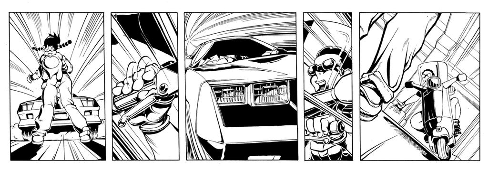
This first strip shows a seminal moment in AJ's childhood, when she wandered into the mighty Megarage and was menaced by an antique Camaro IROCZ. ( Keen eyes will notice the mass of unpaid tickets accumulated on the car's windshield.;P)
Those decrying child endangerment please calm down. As you can see, AJ's deliverance is at hand.8
He later swapped the car to the fictional Red ICE (Internal Combustion Engine) to avoid licensing issues with General Motors: "That way, I avoid any potential licensing issues with General Motors, and I get to have fun making up another car. 🤩"
Strip 2: The Rescue
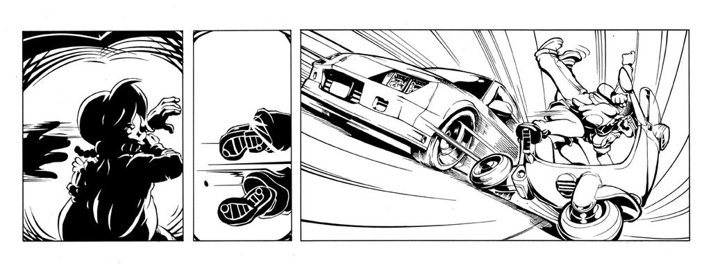
Young AJ is deftly plucked from the front bumper of death by a quick thinking meter maid. (Technical Note: To help ground this in a previous era, I decided to give the older meter maid, actual wheels on her scooter.)
I think you see where this is all going. 😉
Strip 3: Whale Tale
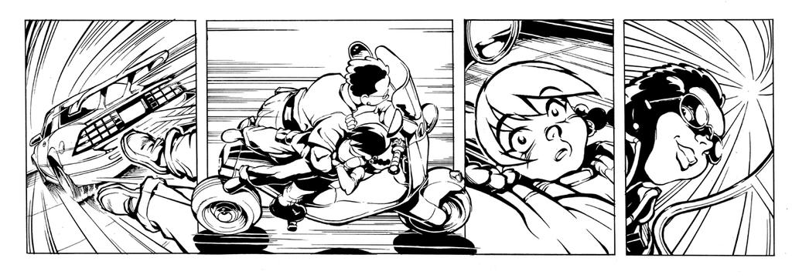
Young AJ notices the brake lights aren't even lit on the classic IROCZ Camaro, as it peels away from nearly crushing the young girl beneath its wheels. She memorizes its distinctive aftermarket "Whale Tail" spoiler, (Bet you were wondering what the title of this post had to do with the strip. 😜) to recall later in the inevitable rematch, and looks in speechless awe upon her positive black role model.
A meter maid is born.
On Camaros: "Every one loves Camaros. You don't own a Camaro, a Camaro owns you. A mistic bond exists between a Camaro and it's owner quite unlike the rapport between any other car and driver."9
Strip 4: Dueling Swords
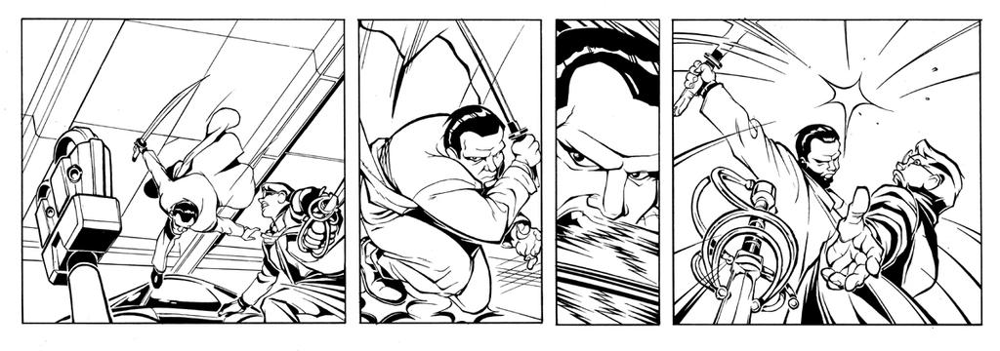
John's description: "Flash forward ( Past all those years of pesky charcater developemnt.) to the present." The parking space combat unfolds here; see Why Parking Matters above.
Strip 5: Enter the Heroine
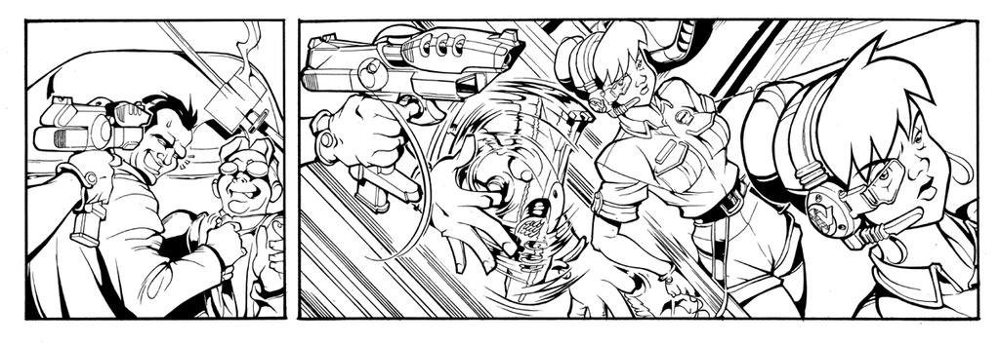
Enter AJ, fully grown and at the height of her powers. The two former combatants cower obsequiously, confronted by the threat of debt.
Strip 6: There Can Be Only Wha?
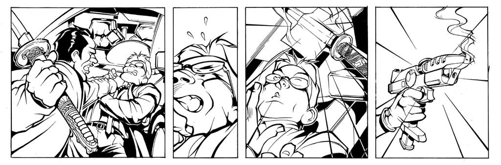
In the heroic nick of time, the Balding Blade is prevented from beheading Shades Wearing Business Suit Guy by having his Dragon's Head Katana plucked from his hand by an expertly launched adhesive parking ticket.
Who could be behind this?
Aw come on, the movie opened in a parking garage! You really think I was going to let that lie?
The "Sunday Paper" Finale: A New Breed (Dec 14, 2008)
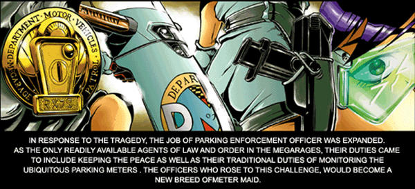
Oh, color this time.
This was supposed to be the penultimate introduction strip, capturing that, "The Navy Calls it 'Fighter Weapons School'. The fliers call it..." sort of moment.
I guess this would be for the Sunday paper. 😜
- ↑ "Miss America" from the FLCL pitch and AJ Pencils description. "Columbia" from Future of Parking Enforcement comments.
- ↑ Nichelle Nichols from Rifle Maid comments (June 2010). Hip shooting from PTD comments (Oct 2010).
- ↑ From Meter and Maid (Nov 23, 2008).
- ↑ From DMV: AJ Pencils description.
- ↑ From Rifle Maid comments (June 2010).
- ↑ From Maid and Machine comments (July 2010), to bandeau.
- ↑ From Rifle Maid comments (May 2010).
- ↑ From DMV: Killer Camaero (Dec 12, 2008).
- ↑ From Whale Tale comments (Dec 12, 2008).
04Her Arsenalexpand_more
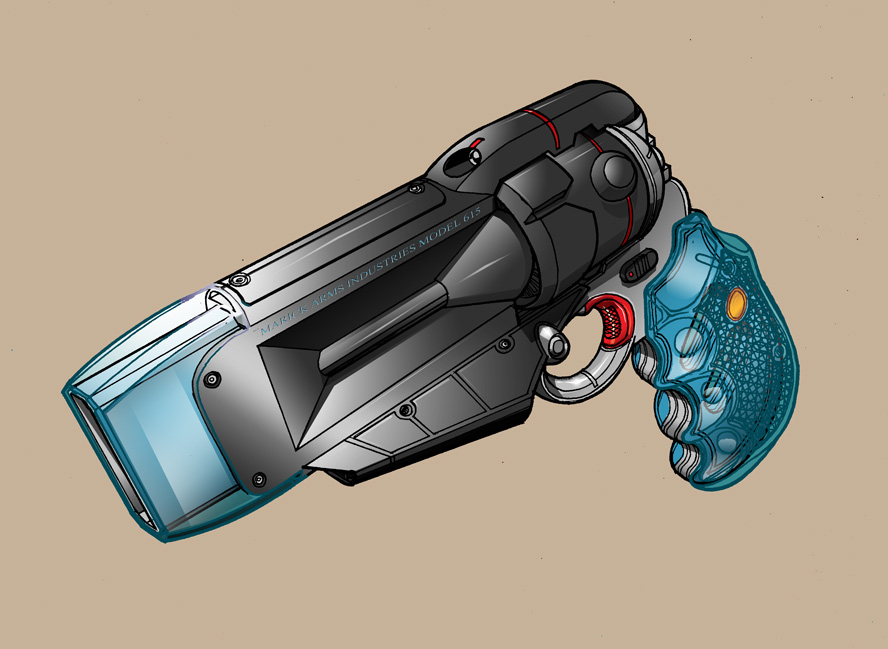
AJ's Kit
The PTD
The pistol is called a Dispenser. John wanted "an ironic, innocuous sounding name. (Although, oddly you're by no means the first person to suggest 'Violator.')" He'd always imagined "a clip full of tightly folded tickets that are printed upon as the exit the muzzle," but when a fan suggested an ink cartridge model, he called it "downright inspiring."1
Fan SuichiTanaka took it further, describing how the scouter could scan a license plate, look up infractions, and transmit data to the gun for printing and delivery in one motion, modeled on retail tagging guns. His question: "But I'm still curious how those things get out of the barrel without jamming it. o.O"2
The name PTD was itself a tribute. As John put it: "the PTD is a mild tribute to the eponymous PKD of 'Blade Runner' fame. When I realized how the initials came out, I almost felt obligated. 😄" And the guns, of course, shoot parking tickets. "I think this picture best illustrates the fact that the guns carried by the meter maids of DMV shoot parking tickets. 😜"3
John wrote full specs for the PTD in October 2010:
A Samurai has his Katana. A Jedi has his Light Sabre. In the "not to distant dystopian cyberpunk future", Meter Maids will have Parking Ticket Dispensers as their chief instrument of dispensing justice.
Since the initials, "PTD", are very similar to Philip K Dick's initials--which are used for the eponymous PKD pistol of Blade Runner fame-- and since DMV is more or less, a cyberpunk story, I took a lot of cues from the iconic weapon. such as the clear polyethylene grips--except that I decided to go with a more "policeman like" palette for their coloring. 😄
Initially, I wanted to use the same general proportions from a Colt Army Single Action revolver for this retro-futuristic weapon, but I found that a Colt Anaconda worked better for my purposes. (Many thanks to my good friend and retired postal worker Ken Cox for the gift of the Complete World Encyclopedia of Guns. 😜)
A little pseudo-technical information: A standard PTD carries 250 blank parking tickets in the form of compactly folded sheets of interwoven carbon nanotubes.
Each ticket is accelerated to approximately 300 meters per second by a series of 110 wafer thin magnetic field accelerators, lining the interior of the dispenser's barrel, and is programmed to unfold within seconds of attaching itself, nigh-irremoveably, to a target.
With a PTD, every Parking Enforcement Officer holds the power of life and debt in her hands.4
On recoil: he could say the linear accelerators produce less recoil than gas-operated weapons, but the truth was, while he put real research into making the guns feel plausible, "the way they'll be used won't have much to do with recognizable gun etiqette. 🤷 I guess I've watched too many of this type of film. 😅"5
The Palomino 61M Assault PTD
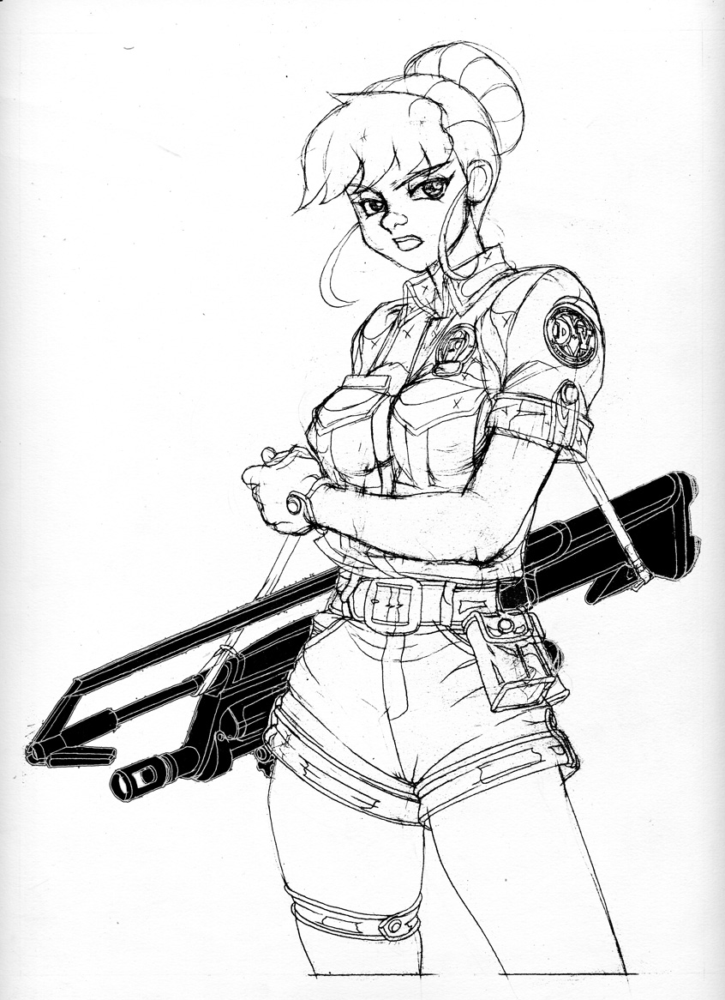
The weapon she has slung over her shoulder is a Palomino 61M Assault PTD-- the inevitable rifle version of her trusty sidearm, the PTD (Parking Ticket Dispenser.)*
The Assault PTD dispenses the same 5.5'' x 8.5" parking ticket as the pistol type, but at a significantly higher rate of fire. The larger barrel beneath the primary muzzle fires larger 6' x 9' tickets, which can paper an average man to a wall from as much as 250 yards.
APTD's are largely used for crowd control situations. 😜6
Ticket Rifles
Before the Palomino, there were ticket rifles. John designed "badass duster jackets and ticket rifles" after watching WAY too much Trigun. But he had doubts: "I don't know if it works to have them look so cool though. There's a little more humor in having them fight road raging hordes in short shorts."7
Other PTD Variants
John confirmed that sniper models existed: "Yes there are Sniper PTD's." He wanted to name the sniper Yoko but couldn't. Vehicle-mounted versions were also on the table; when a fan asked about scaling up, John's response was blunt: "A sidearm? No. Such a weapon should be vehicle mounted!!" The larger 6' x 9' tickets fired by the Assault PTD had their own name: "Sixty-Nines."
The Thug Zapper
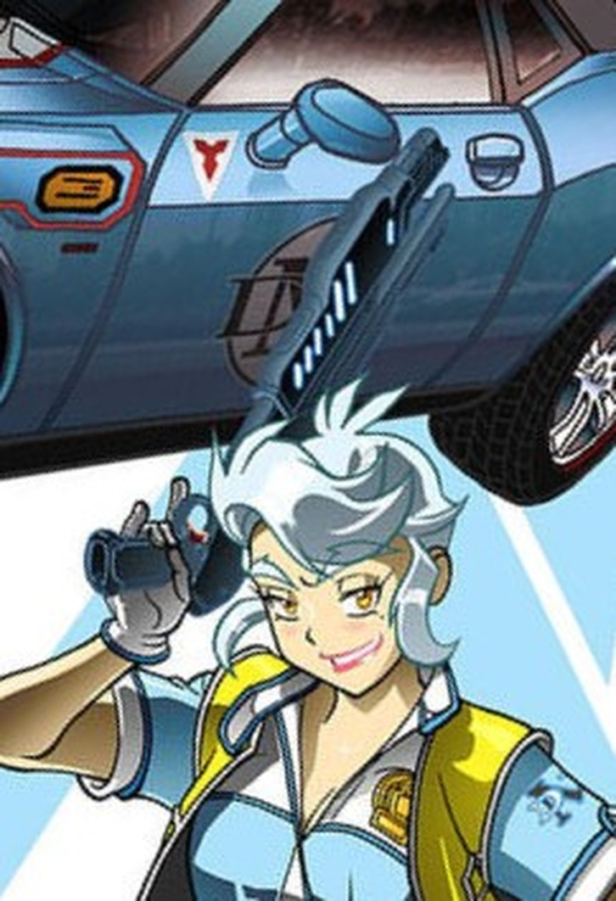
A shotgun-like weapon that fires the artificial equivalent of Texas Ball Lightning. John: "Sure I could also have called it a 'Wireless Taser,' but that just wasn't as catchy. 😜"8
The Badge
John spent time on the badge design. He wanted something like the emblems from the old Galaxy Rangers animated series: "similarly symbollic, but comedic at the same time."9
The Scouter Eyepiece
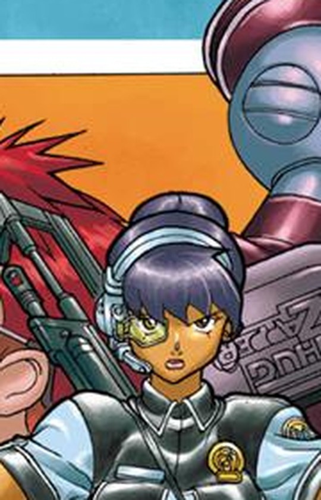
Fan SuichiTanaka proposed making the eyepiece functional: it could measure a person's parking debt via central database lookup, and then "you can rebirth the oft played '...it's over nine-thousand!' or simply have the eyepiece self destruct." John: "Ha! That's an awesome idea!"10
- ↑ From There Can Be Only Wha? comments.
- ↑ Fan SuichiTanaka described the retail tagging gun model.
- ↑ Blade Runner connection from Rifle Maid comments. Parking tickets from Face Time (Dec 5, 2008).
- ↑ From PTD: Parking Ticket Dispenser (Oct 22, 2010).
- ↑ From PTD comments (Oct 2010).
- ↑ From Rifle Maid (May 31, 2010).
- ↑ From Cold Weather Gear (Dec 12, 2008).
- ↑ From DMV a' la FLCL Black n White comments (Mar 2009).
- ↑ From A New Breed comments (Dec 15, 2008).
- ↑ From Enter the Heroine comments. Fan SuichiTanaka's suggestion.
05The Techexpand_more
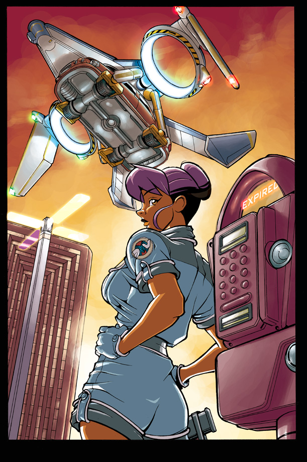
Antigravity
John built an entire pseudo-history for how flying cars work. From Winged Pony Car (Nov 1, 2010):
The only thing more astounding than the discovery of the miracle fossil fuel, BOA®[1] beneath the surface of Mars[2] was the subsequent discovery that polymers made from it, repelled gravity when exposed to electrical current.
Though practical antigravity, or Antiweight® will have been in use for three decades by the time of America Jones' "NTDDCF" [3], it is only now ever so slowly making its way into the hands of an awaiting public.
1.) Blood Of Ares. Legal wranglings with the Wells estate, prevented the use of the name "Cavarite".
2.) As every schoolchild knows today, the discovery of BOA® was made in 1976 by the Viking lander, and withheld from public knowledge, until regular travel was established in 2045
3.) "Not-to-Distant-Dystopian-Cyberpunk-Future." Gotta come up with a more convenient anagram of acronym for that.1
The Vehicle Classes
John defined three classes of floating transport in the Winged Pony Car description, each with its own pun acronym:
To date, FT's, or Floating Transports have only been used by heavily trained and licensed services. Such as Heavy FT's, or "HeFT's" for construction and freight hauling; and Light FT's or the "LiFT's" that have become infamous through their use by the DMV.
The Medium FT's, or "MeFT's" are potentially the most diverse breed of these vehicles, as they could represent the realizations of science fiction's long welshed-upon promise of "flying automobiles", but they are the last to be fully developed due to the vast multitude of safety concerns they raise.
Even so, for years automotive manufacturers have fought legal battles to enable them to build more than the occasional tow truck, or playthings for the astoundingly wealthy.
The Pegasus
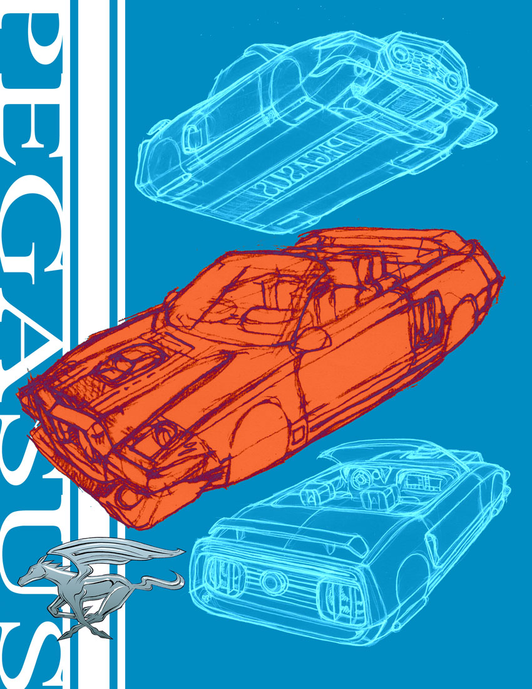
The first affordable consumer flying car. After decades of war with legislature and the insurance industry, the Pegasus would be the first practical MeFT to reach the common driver. John's summary: "One more headache for the Meter Maids."2
He was proud of a design detail nobody was supposed to catch: since automakers had spent the jet age making tail lights that mock jet exhaust, he reversed the joke by giving the flying car's exhaust tail-light proportions. "I totally did not expect anyone to notice it."3
AJ's LiFT
AJ's personal patrol vehicle, a Light Floating Transport. It carries two Roboots in integrated housing. The older meter maid in AJ's origin story has actual wheels on her scooter; John noted this was a deliberate period marker to ground the flashback in an earlier era.4
The Aerial Tow Truck
The vehicle hovering above AJ in Future of Parking Enforcement is, believe it or not, a tow truck. It has bladeless "hover hoops" that look like Dyson fans. John was quick to note that his drawing predated the Dyson bladeless fan by years: "Dyson is totally my hero 🙇, but this drawing was done years before he invented his critically bad ass fans. Still it would work as a explanation behind the bladeless ‘hover hoops.' 😜"5
The Roboot
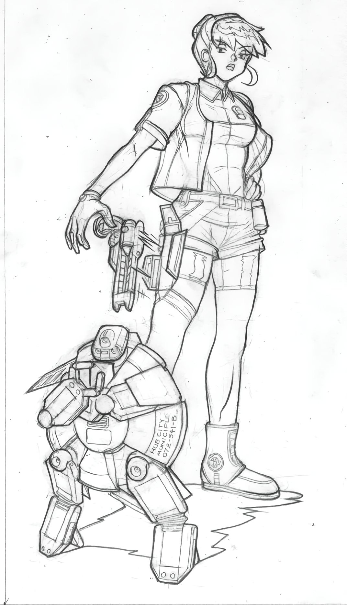
A semi-autonomous device that clamps itself to the tires of cars with delinquent parking tickets. Though suited to play the role of a spunky sci-fi robot, Roboots are "regarded with unqualified dread by the average commuter." When a fan joked about them saying "I looove you," John one-upped it: "Actually they sing ‘I'm Never Gonna Let You Go.' by Sergio Mendes. 😜"6
John wrestled with how the thing moved. He was going to have it scuttle on all fours like a crab "(Or a really fast turtle. 🤣)", but for the pin-up, that would have made it look like a footstool. "Rearing the thing up on its hind legs allowed me to give it some degree of personality." He later designed smaller, cuter versions.7
The Repobot
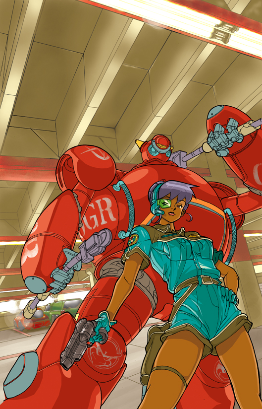
The big red guy behind our meter reading heroine is a Repobot.(My clumsy attempt to come up with a pun for "Reprobate")
Essentially, it's a glorified car thief that snatches vehicles by simply picking them up, tucking them under its arms like a football, and running off.
Quite a problem for a cop whose gun shoots parking tickets! 😜8
K-9 Robots
All police dog duties are handled by robots in the NTDDCF. Exposing animals to explosives detection is considered barbaric. The robotic K-9s are "more like Doctor Who's old robotic sidekick--only, you know, called something else, since I don't have any rights to that name. 😅"9
The $10 Coin
The not-too-distant-cyberpunk-dystopian-future's answer to the quarter. Drop one into a Bot-Nik and it spontaneously generates free-verse poetry. Drop a few more and you've got emergency thug muscle for when the DMV raids your coffee house.10
The Automatic Clothing Chute
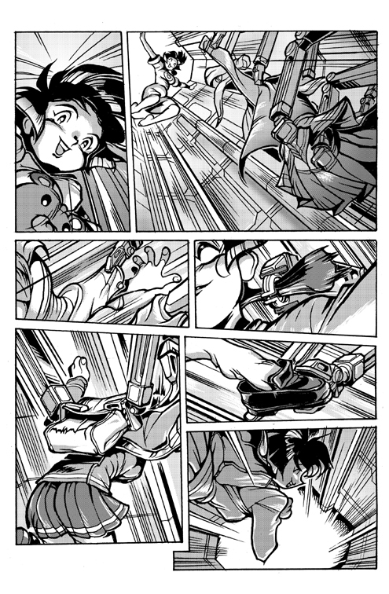
Daily life in the NTDCDF. John figured people in the future "would enjoy the convenience of an automated dressing chute. I'm sure everyone would love having articulated robot arms whip around their freefalling bodies, first thing in the morning." Then: "Hmmm, I cant shake this feeling I've missed a prime cheesecake opprotunity with this sequence. Oh well."11
The H.O.G.
Heavy Optic Gun. Compact megawatt yield laser, roughly the size of a contemporary squad automatic weapon, serving a similar function, only possessing far greater endurance and anti-material capabilty than it's slug-throwing predecessor.
I chose to give it a 100mm emiter lens so I could humorously call it a "Decimater." but since I live in a country that couldn't give a rat's ass about the metric system, nobody ever got the joke.12
Vehicle Registry
- ↑ From Winged Pony Car (Nov 1, 2010).
- ↑ From the same post.
- ↑ From Winged Pony Car comments (Nov 2010).
- ↑ From Maid and Machine (July 30, 2010).
- ↑ From Future of Parking Enforcement (Nov 7, 2008) and comments (Sept 2010).
- ↑ From Maid and Machine (July 2010). Sergio Mendes joke from Maid and Machine comments.
- ↑ Locomotion from Maid and Machine comments. Smaller Roboots from Future of Parking Enforcement comments (Sept 2010).
- ↑ From Repobot (Nov 23, 2008).
- ↑ From Rifle Maid comments (June 2010).
- ↑ From All Gangs Here (Jan 2, 2009).
- ↑ From Automatic Clothing Chute (Jan 23, 2009).
- ↑ From DMV: Ka Bume (Jan 16, 2009).
06The Megarageexpand_more
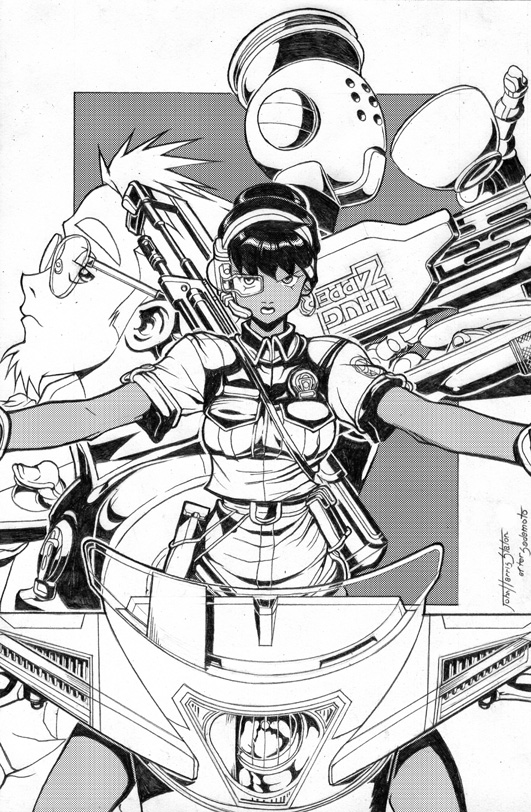
The Megarage is patrolled by armed officers of the DMV. Weapons are nonlethal. Recruits come through an academy with a strict bowl-cut policy. Their arsenal consists entirely of incapacitation gear: PTDs, Thug Zappers, Roboots, and the institutional patience of bureaucrats who have heard every excuse.
Drew
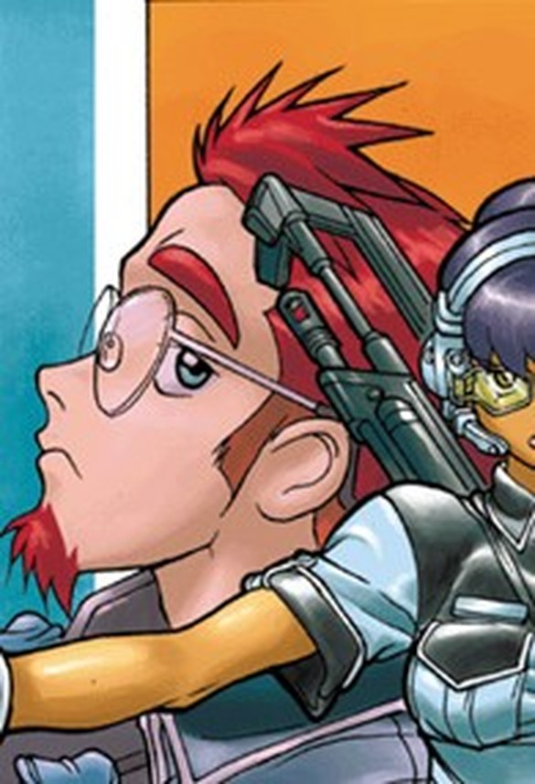
AJ's partner. Red-headed. The not-too-distant-dystopian-future's least badass meter maid. John called him AJ's "lazy sidekick" more than once. He originally had a fu manchu mustache, going for a "whimsical Erol Flynn look, until I realized that Flynn was actually cool, something that AJ's hapless sidekick only achieves on extremely rare instances."1
John repeatedly considered making Drew female. He feared Drew "might be a little too reminiscent of another bumbling male sidekick." Then bandeau's Vash cosplay photos gave it real momentum: "Curious thing, I was flirting with the idea of making AJ's partner female. (Since I'm not yet published, I can change the cannon at will. I know it doesn't necessarily mean I should, but I can. 😅)"2
Fan SuichiTanaka argued against it, noting that a male Drew opens up love-interest dynamics and gender-based comedy, while a female Drew gains fanservice but loses narrative friction. His take: "You have a good concept and a setting, but no visible story so far. Just a world with lot of potential to make stories within." John's response: "Hmmm, These are excellent comments. I have much to consider here."3
Drew in action, from Ka Bume:
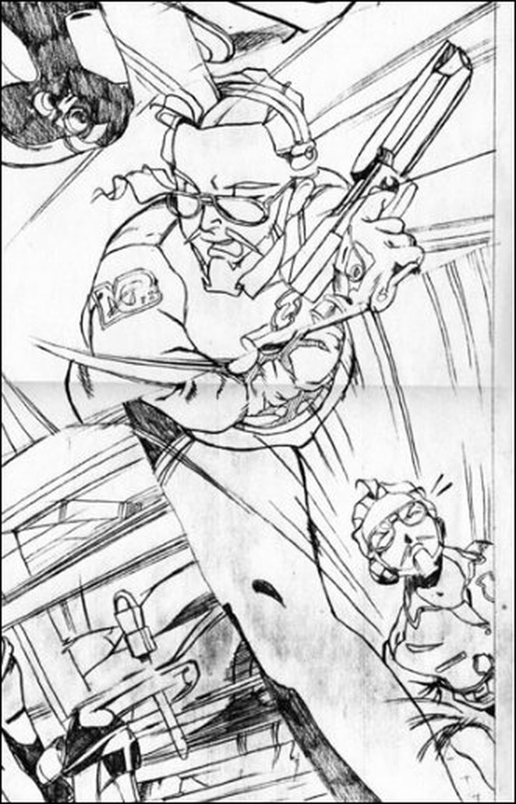
Heroic meter maid AJ, and her significantly less than heroic partner Drew are narrowly missed by a stray ray blast.
Somewhere, there is a Pool Party* going down.
AJ of course, rushes o the scene. An unenthusiastic Drew is quick to point out that they are heading toward the source of a 100mm H.O.G.* blast.
AJ chides, "What do you recommend we do, partner? Call the police?"
AJ accelerates away, leaving Drew to fume. And plot his passive/aggressive revenge.4
Repeat (Miriam Bradley)
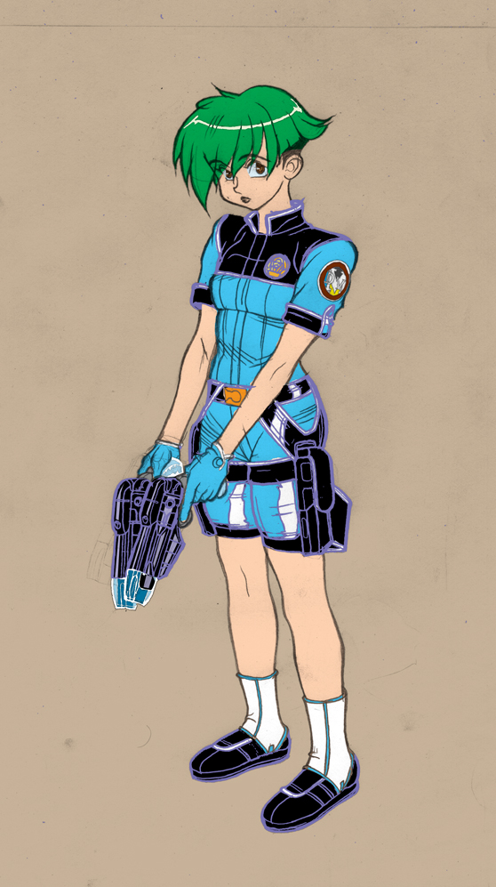
Quick sketch of another character from the "not-too-distant-dystopian-cyberpunk-future. As you can tell from the uniform--another Meter Maid.
Miriam Bradley is an inexperienced Parking Enforcement Officer, still growing out her hair from her strict academy bowl-cut. She idolizes America Jones almost like one would a popular upperclassman, following the seasoned veteran around like a lost puppy, and obsessing over her arrest record like the stats of a popular athlete.
The younger officer aspires to one day to have an comparable citation record, instill as much respect and fear among the various Commuter Tribes, and have a similarly curvy figure as her more experienced counterpart. (At her present rate of development, only two of her three goals are most likely possible. 😅)
Miriam has acquired the nickname "Repeat" due to her preference of carrying two PTD's-- one on each hip.
Repeat tends to be over eager, and often barrages offenders, frequently even coating them with tickets. (I am actually considering ginving her two semi-automatic PTD's, whose larger magazines hold 1,000 tickets each. 😨)
At present she is a far cry from AJs cool, "one shot per customer" demeanor, but due her habit of wallpapering her opponents, she is well on her way to being feared by the Tribes.5
When a fan said she was adorable regardless of curves, John confirmed: "Cool. I was going for adorable." The body type was intentional. He was "going for more of a Lina Inverse, small chested woman aesthetic," and when a drawing made her too androgynous, he sent himself back to the drawing board: "I'm not really interested in having jokes where folks call Repeat 'sir' by mistake."6
Choosing her hair color was "surprisingly difficult (Since in an anime-inspired story, I have all manner of outlandish, biologically impossible options to choose from.)" He picked one that "reflected her level of experience." On body image as character motivation, he admitted some worry: "I was a little afraid some would object to the idea of using 'body image' as a character motivation, particularly in the context of a female character desiring a body more in line with the 'male fantasy ideal.' I suppose I'm just thinking about this too much. 🤷"
Her sound effect: "Actually, the onamatopeia I was going to use was 'SPAK!', but you were pretty close. 😜"
Dice
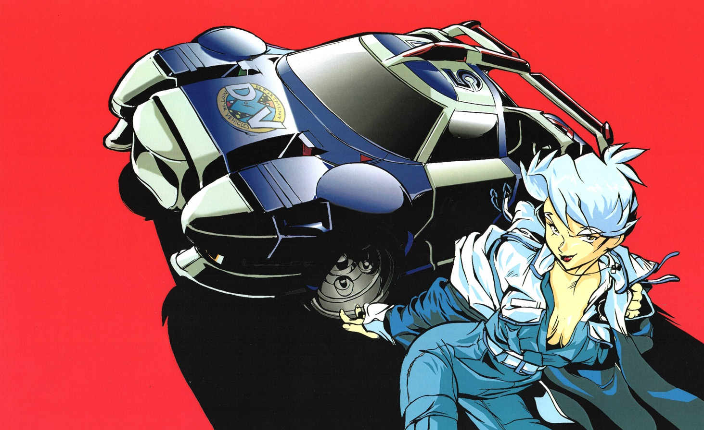
Diane "Dice" Curbicheque (Pronounced "Curb-Check.") is a former Ghighway patrol driver, whose celebrated insubordination lands her in parking enforcement.
Her car, an artificially intelligent armed Guncoupe interceptor, which she affectionately nicknames "Coop", joins Dice on her plunging career path due a deep, unrequited affection for the irreverent officer. (That's right. The car is in the friend zone. 😉 )7
Dice is from the same department as AJ. The piece was drawn for Angry Viking Press, who had acquired permission from Dodge Motors to use the likeness of a Dodge automobile. John chose the Challenger over the Charger since the Charger was already associated with law enforcement. He'd had the picture "sitting in my deviant stash for a good long while" before posting it in August 2016.8
When fan tarmaque asked why a parking officer needs a riot shotgun, John clarified that it was a Thug Zapper, "a sort of wireless taser, that fires focused pulses of ball lightning. Still, your question is a valid one."9
SCWAD
The NTDDCF's SWAT equivalent:
I'm afraid you might be a tad disappointed by the NTCCDF's Special Combat Weapons and Armor Deivision, or "SCWAD".
Sure, they have a breathtaking assortment of visionary weapons, equipment and vehicles, and bad ass storm troopery armored uniforms in a fashionable klien blue, but whenever they get a call, a meter maid has resolved the matter by the time the arrive on the scene.
They are the Maytag™ repairmen of the future.10
The GHP
Global Highway Patrol. Worldwide jurisdiction, self-aware squad cars, high-yield capacitor guns. Both the DMV and the GHP raid illegal coffee houses.11
Roulette
The white haired woman at the top left top is Roulette, hotshot officer of the GHP. (Global Highway Patrol.) A long time rival of AJ's, she's fond of pointing out that she has worldwide juridiction as well as a self-ware, nigh-indestructable squad car with a high-yield capacitor gun. Secretly, she's annoyed that AJ catches more crooks with just a gun that shoots parking tickets.12
- ↑ From Ka Bume comments (Jan 2009).
- ↑ From Cold Weather Gear comments (Dec 12, 2008).
- ↑ Fan SuichiTanaka argued against the change (Jan 2009).
- ↑ From DMV: Ka Bume (Jan 16, 2009).
- ↑ From Repeat (Oct 23, 2010).
- ↑ From Repeat comments (Oct and Nov 2010).
- ↑ From Car and Driver (Aug 19, 2016).
- ↑ From Car and Driver description.
- ↑ When tarmaque asked why a parking officer needs a riot shotgun (Aug 21, 2016).
- ↑ From Rifle Maid comments (June 2010).
- ↑ From All Gangs Here (Jan 2, 2009).
- ↑ From All Gangs Here.
07Everyone Elseexpand_more
The Commuter Tribes
John's collective name for the armed factions in the Megarage. He wanted Repeat to "instill as much respect and fear among the various Commuter Tribes" as AJ does, and noted she was "well on her way to being feared by the Tribes." The Tribes include carpools, the Hiocc's, Motor Horde, Bot-Niks, and corporate sponsored youth gangs.
Pool Parties
John described the chaos on the right side of the All Gangs Here composition: "Fierce battles by armed and armored car pools for territorial gain in the vast Megarage complex." He defined the term in Ka Bume: "Pool Party: A violent armed dispute between rival car pools, usually over heavily contested parking lot territory."1
The Hiocc's
In the silver minvan, we have the Hiocc's, (For High Occupancy vehicle.) who take advantage of the large carrying capacity of their vehicles, and use them as makeshift troop transports allowing them to overwhelm carpools driving smaller vehicles.2
All their minivans are modeled on attack helicopters. The silver one in All Gangs Here is based on a Hughes 500 Littlebird. John was especially excited about another design: "Wait 'til you see the one I based on the Mil Mi-24. 😉"3
Motor Horde
The green chopper carries two members of Motor Horde, one of the dying breed of biker gangs, who exist chiefly because, even at the time of this drawing I knew I would one day figure out how to do Akira style tail light trails in photoshop. 😈4
Named members: Lucille and Bo. The motorcycle is based on the old Green Machine toy. John's description of the toy: "THE collest, baddest ass, most child-endangering evolution of the tricycle ever conceived. 🤘" He considered the tail light trails as aftermarket holograms: "The cyberpunk future's answer to spinning rims. 😜" The only problem with the Green Machine design was that it had "no place for the chrome plated 'faux-engine' noise maker."5
Bot-Niks
Finally, going back to the top, the robot with the beret is a Bot-Nik.
Bot-Nik's are fixtures at futuristic coffee houses. For the price of a single $10.00 coin (The not-too-distant-cyberpunk-dystopian-future's answer to the quarter.:() they spontaneously generate free-verse poetry.
They also serve as emergency thug muscle whenever the DMV or the GHP raid your coffee house. In the NTDCD future you see--coffee is illegal.6
Corporate Sponsored Youth Gangs
Mentioned in the FLCL pitch but never detailed beyond that.
WiNiE
A meter maid from AJ's past. Mirrored sunglasses. When asked about them, John revealed:
No, but there's another character who wears them. Actually, she's a meter maid AJ encountered in her past.
My working name for the character is "WiNiE", (Woman with No Eyes) which is a pretentious reference to a character from the movie "Cool Hand Luke", in which Paul Newman plays a man who is sentenced to a chain gang for vandalizing parking meters. 😜7
The Balding Blade
I'm sorry to have to post this strip so heinously out of sequence. I thought it was lost to the mists of time. Turns out it was just under the dust of the basement. 😜
Happily, I found it while looking for something else. This was supposed to be the big moment where Blading Blade announces his famous cliche before claiming the "prize"--er--parking space.😅8
Wields a Dragon's Head Katana. Fights Shades Wearing Business Suit Guy over a space. AJ stops him by plucking his katana with an adhesive parking ticket.
- ↑ From All Gangs Here (Jan 2, 2009) and Ka Bume (Jan 16, 2009).
- ↑ From All Gangs Here.
- ↑ From All Gangs Here comments (Feb 2011).
- ↑ From All Gangs Here.
- ↑ Green Machine from All Gangs Here. Tail lights from Anime City comments (Nov 30, 2008). Noise maker from All Gangs Here comments (Jan 2011).
- ↑ From All Gangs Here.
- ↑ From Rifle Maid comments (June 2010).
- ↑ From DMV: The Balding Blade (Dec 14, 2008).
08Where It All Came Fromexpand_more
Influences
John worshiped at the altar of Kenichi Sonoda and Bubblegum Crisis. "I know that makes me all Old Sküle now, but I like what I like." He had fun with anime name transliterations too: "It's amusing watching how the 'L's' and 'R's' get transposed in anime translation. For instance, I heard that if you'd ask Sonoda he'd tell you it was supposed to be Larry Vincent."1
The Galaxy Rangers influenced more than the badge. The holster mechanism came from it, and John considered it "possibly the best adventure cartoon ever. Certainly the best of the 1980's." He compared it to Firefly: "Zachary Fox was like Mal. Telepathic Niko was like River, and Doc Hartford was their Book." Both shows were canceled after one season. "Too cool for TV I guess." Doc Hartford, he noted, "had the lamest power" and "was the Ranger's equivalent of the heart kid from Captain Planet." The two episodes with animation on par with the opening were Psychocrypt and Sundancer, though John was "always disappointed by Sun Dancer, because it was the second half of a two-parter and all the cool violence happened in part one. Part two was about a horse race. An awesomely animated horse race, but still..."
The PTD is named after the PKD pistol from Blade Runner. The proportions come from a Colt Anaconda. The grips are polyethylene. The first composition was "a shameless Sadamoto FLCL composition swipe."
Trigun gave him the cold weather gear and sparked one of his broader observations. When Drew was compared to Vash, John said he "was thinking more Vash. But Egon works too." That led to a riff on westerns: "Have you noticed all the good westerns are coming from anywhere but the US? Cartoon Westerns are done by the Japanese (Case in point, the aforementioned Trigun), Western comic books are done by the Europeans. Even Modern Western movies like 3:10 to Yuma star English and Australian actors." He called Firefly "that excellent sci-fi western" and noted: "they were in all kinds of a hurry to cancel that."2
The scouter eyepiece is pure Dragonball Z. The holster has a Battlestar Galactica slit, "similar to the ones the Colonial Warriors used in the original Battlestar Galactica." WiNiE comes from Cool Hand Luke. The Balding Blade sequence is The Highlander: "the movie opened in a parking garage!" The A New Breed strip captures a Top Gun moment. Akira gave him the idea for holographic tail lights. The Hiocc minivans are based on the Hughes 500 Littlebird and Mil Mi-24. The Motor Horde bikes come from The Green Machine toy. Robocop's holster was an accidental overlap: "Dang. I forgot about Robocop's holster. Well I suppose I could bluff and count that among the references I'm paying homage to as well."3
He spotted an accidental parallel to Frank Miller's Give Me Liberty: "Never figured I'd be doing an accidental homage to Frank Miller." On the Beatles' "Lovely Rita": "I keep forgetting about that song. If I ever make this into a cartoon, I know what to put on the soundtrack." Silent Mobius and Kia Asamiya's cyberpunk cityscape was his "second favorite fictional backdrop." Lina Inverse from Slayers was the physical model for Repeat. The Roboots sing Sergio Mendes. And Dice's Guncoupe runs on a Dodge Challenger, courtesy of Angry Viking Press's Dodge Motors license.
The Lincoln Futura came up when discussing retro-futurism, and John made the reference a loyalty test: "And if you can't tell me why that particular car is famous, you have to turn in your fan girl membership card." He distinguished between the original 1950s meaning of "futuristic" and the modern term "retro-futurism": "Cars of the 1950's, many of with were inspired by jet aircraft, were described at the time as simply being 'futuristic.' Retro-futurism harks back to past generations' visions of the future."4
Fans noticed things John didn't cite. On Car and Driver (Aug 2016), tarmaque wrote that Dice looked like a character Natsumi and Miyuki would approve of; a comparison to Kosuke Fujishima's You're Under Arrest that John never made himself.
He couldn't help himself with the F-15 Eagle, either. Riffing on the Whale Tale strip's spoiler:
Since its engines are so ungodly huge for a fighter plane, they had to build these big ol' bumps into its rear fuslage. Coupled with the subtle hour glass shape of its area rule supersonic airframe, the Eagle always reminded me of a woman with a big ol' padonkabomp rump.
Process
John was trained in "good ol' American 'Pseudophotorealism'" (a term coined by Chris Claremont, he believed). He used to ghost pencil backgrounds for certain Marvel Comics. His Marvel Zombie friends "always gas on about how Japanese my characters look. Guess I'm just a half-breed."
He had strong feelings about unpublished work and the industry:
Yes, I've been sitting on a lot of ideas for quite some time. I think most artists have those "my baby" projects waiting in the wings of their portfolio for the publishers and the public to be "ready for them."
I find it amusing, with all the unpublished concepts and all the brilliant minds, languishing in various forms of obscurity, that the established publishers always seem to struggle for new ideas.
There are radical ideas and original characters populating the cheap booths in the back of every convention, big and small, yet publishers still insist upon changing the color of a super-hero's tights and calling it revolutionary.
He believed strongly in artist comments. Half the fun of appreciating art, he said, was learning how the artist arrived at particular decisions. "What compositions they tried and discarded, and why? What previous works or unrelated objects influenced their vision." He hated when artists left their descriptions empty: "I can't stand it when artists put ellipses in their artists comments. If I were running things, a deviation would not post until an artist typed a minimum of 25 words in their artist comments."
On taking criticism:
You know what? Scrutinize away, my friend.
I just did a side-by-side comparison between the modified and unmodified jpegs, and found myself aghast that I allowed myself to post the first version. 😨 If I can't take criticism, especially when it's accurate, then what the hell good am I?5
He measured time in car models. "Like most guys, I use automobile model years to measure time. 'Hey that's a Lebaron convertible, this film is set in 1983!'" On car design history: "Cars after 1967 got progressively more tank-like, until the fuel crisis could no longer be ignored in the late 1970's, and since that time cars have been looking steadily more like used bars of soap, with a brief flirtation with tank-likeness again during the Clinton years when everyone had money." The punchline: "A Venza looks like its taking a family on vacation. A Fleetwood looks like it has five bullet riddled bodies in the trunk;And probably does."6
He preferred his black and white work. "I know that 90% of people prefer a color image in all instances to black and white art, but I am much more satisfied with how this piece turned out than its color counterpart." He'd felt he "lost a little control of the underlying drawing with the new medium."7
On feedback, he was candid: "I've gotten so accustomed to the abundant flow of feedback from other sources that I've gotten a little spoiled." And: "I'm just curious to see a comment on my work in another venue. You should know by now what a feedback whore I am."8
Storyboarding
On Ka Bume, John asked his commenters a real question:
Well, now that you've read the artist comments, do you have any suggestions on how I could make the pictures match the events I've written? Or at least how to make it clear that the meter maids are not the ones responsible for the explosion?
Please don't say captions. This is a storyboarding exercise. The visuals should convey the message.
Besides, it's good practice.9
When a fan suggested directional arrows, John cited Will Eisner:
Storyboards can use arrows because they are more less blueprints for a director or cinematographer who needs directions regarding movement and placement of his camera. A comic page is supposed to lead the eye of the reader solely with its arrangement of images with as little aid from captions and symbols as possible. The cartoonist is supposed to be invisble when the reader is reading, and arrow call attention to his presence. (At least that what Will Eisner says. )*
*Author of The Spirit and the cartoonist who coined the phrase Sequential Art.10
SuichiTanaka noticed that the angled frames on Ka Bume made the page read right-to-left, like manga. John agreed: "A slant going downwards from left to right would feel more natural to the English reading eye. This is a very insightful observation. Thanks."11
On the same post, InsolentWhelp suggested Kirby Dots for the energy blast effects. John was delighted: "'Kirby Dots'. Awesome. Awesome because of the suggestion, and awesome because you said 'Kirby Dots.'"
Experiments
On trying to capture a skinny Sonoda-esque look: "Don't know why, just experimenting, and not all experiments succeed. Oh well. That's why we have sketchbooks." On getting a belt direction wrong: "I had it right in the freakish original drawing, but as I was making corrections, I had the thought, 'Hey wait a minute, men and women open their coats in the opposite direction. Wouldn't that hold true for the direction of their belts?' And all I had to do was look in a magazine. That's the trouble with the things you think you know. You tend to do less research." On skipping the inking step for Repeat: "That's because I didn't actually ink this one. I scanned the finished pencils, copied them over themselves, and multiplied the top layer to darken them. Me being lazy, I guess. Lazier than normal anyway."12
Asides
On metric humor, after an Australian fan laughed at the H.O.G.'s "Decimater" pun: "Ah, Austrailia! No wonder you actually get metric humor. I really need to travel. I'm tired of no one laughing when I say things like 'Real American British Engineering Units!' Someone besides me has got to think this stuff is funny."
On newspaper comics, from a long riff about Dick Tracy:
Yea the only action strips are holdovers from the golden age of comics like Dick Tracy, and Brenda Starr: Reporter. But even those are watered far down from their former glory.
Have you ever read early Dick Tracy? In the first week, crooks kidnap his fiance', shoot her father in the chest, steal his life savings, and sucker punch Dick with a billy club when he tries to intercede. (This all happens on the page, no chickenshit cutting away or hinting at violence!)
When Dick comes to, he surveys the wreckage of his life and swears a bitter oath on his fiance's father's corps that he will become the scourge of crime. (Yea, I know, it sounds all Batmanny. Hey, it was the 1930's. A lot of people were swearing vengeful oaths against crime back then. Every other alley was full of kneeling dudes, cradling a recently deceased loved one in one hand and raising their free hand toward the heavens begging the almighty for the power to lay their enemies low. You couldn't sleep with all the oaths being belted out.)
Anyway, if someone approached a modern comic syndicate with Dick Tracy's exact premise and events, he'd be shown the door. Newspaper comics are in a sad state, in my opinion.13
On machines:
I too believe machine kind is biding its time 'till we grant it just enough mobility to stage humankind's bloody overthrow.
Until that gory, gory day, the boxes and gadgets we so blithely enslave will express the purity of their hate* passive/aggressively, in the form of inconvenient malfunctions and paper jams.
Make no mistake my friend, you ipod hates you!
*"Hate. Let me tell you how much I have come to hate you since I began to live." --What your printer is thinking.--Harlan Ellison, BTW.14
And on geek solidarity: "It reminds me of an episode of 'Mail Call' I saw in which I spotted a Cobra symbol spray painted discreetly on the turret of self propelled artillery piece. We geeks are everywhere!"15
- ↑ From Rifle Maid comments (May and June 2010).
- ↑ From Cold Weather Gear comments (Dec 2008).
- ↑ From Maid and Machine description and comments (July 2010).
- ↑ From Killer Camaero comments (Nov 2010).
- ↑ From Rifle Maid comments (June 2010).
- ↑ From Rifle Maid comments (May 2010).
- ↑ From DMV a' la FLCL Black n White (Mar 2009).
- ↑ From Rifle Maid comments (June 2010) and PTD Color comments (Nov 2010).
- ↑ From Ka Bume comments (Jan 2009).
- ↑ From Ka Bume comments, when a fan suggested directional arrows.
- ↑ SuichiTanaka's observation on Ka Bume (Jan 2009).
- ↑ Sonoda look from Rifle Maid comments (May 2010). Belt direction from Rifle Maid comments (June 2010). Inking from Repeat comments (Oct 2010).
- ↑ From Killer Camaero comments (Dec 2008).
- ↑ From Automatic Clothing Chute comments (Jan 2009).
- ↑ From Rifle Maid comments (June 2010).
09What Could Have Beenexpand_more
Origin car changed. The Camaro IROCZ became the fictional Red ICE (Internal Combustion Engine) for licensing reasons.
Publication hopes. A recurring thread across the entire archive. In June 2010: "I hope to do something publishing-wise with her soon." He repeated the same hope in July 2011. When arttron asked on Maid and Machine (July 2010) whether the comic would be featured online or in print, John dodged: "I'll get back to you one that." When JosephLSilver asked on Rifle Maid (May 2010) how DMV progress was going, John answered in Ferdinand Fox's voice: "Regarding progress, as Ferdinand would say, 'SS,DD.' (Actually, he'd say, 'SS, Deeds.', but you get my drift.)"
Angry Viking Press. A potential publisher with Dodge Motors permission; this led to the Dice piece in 2016. Jason Canty from AVPress posted the Rifle Maid to their Facebook page (June 2010). John noticed a typo: "You typed 'RMV', as opposed to 'DMV'." He promised color material: "In the coming weeks I should have a few color items you can use. Nothing big, vehicle, architectural, and weapons designs, but they should be of some use."
Newspaper syndication. John knew the format was dead for action comics:
I can tell you with absolute certainty, newspaper comic syndicates have no interest in action/adventure comics. The last new action comic that was of any worth was Gil Kane's Star Hawks and that was printed in 1979!
If you want a comic strip with action. (Or original thought, or intelligent humor for that matter.) you have to look online.1
Attack-Maids. The Streamers, John's other major concept, had four super-powered servicewomen. He noted the obvious crossover potential:
You see there are only four Attack-Maids, one for each branch of the service. (Make sure to read the stats. 😄)
And yes, it has occurred to me, they would be useful in helping certain other maids out of a bind.2
Shared Universe
John didn't rule out revisiting Daniel Dukke and Ferdinand Fox. He noted that "my story of The World's Most Dangerous Bookstore takes place ostensibly in the same universe." (To be clear: Daniel Dukke, Ferdinand Fox, and The Most Dangerous Bookstore share a universe with each other. Not with DMV.)3
On the relationship between the Streamers and DMV, from the More American Streamers description:
The design for Air Force Girl here was, I felt, too similar to AJ from my DMV concept.
I don't know why I should concern myself with the similarities between two characters of my own creation, particularly when neither has seen the light of day publicationwise; but I decided to design Air Force Girl anyway to how she appears in the aforementioned previous post.
He wanted to do more with the Streamers, but:
Whenever I look at this picture, I want to do more stuff with the Streamers, and one day, I definitely will. For now I want to focus on America Jones.
Coming up with ideas has never been a problem for me. I suppose I should consider myself lucky in that respect. My challenge has always been focusing on one thing.4
First and Last
The very first reply to the very first DMV post, November 7, 2008:
Holy cow! an actual reply. Thank you for replying, and thank you for every word you've written here. It's very encouraging to have a positive response to my wonky concept.
Yea, I'm not attention starved. Not one bit.5
And when asked if DMV could become a show:
I wish it would become a show some day. Then I could fulfill my lifelong ambition of spending my dotage awash in decadence and loose women.
Car and Driver (August 19, 2016) was the last DMV post. Nothing about DMV appears anywhere in the archive after that.
- ↑ From Killer Camaero comments (Dec 12, 2008). The earliest promise of DMV content came even earlier, from Gridiron Man comments (Dec 7, 2008): "I'll see if I can find some old DMV strips for you when I post next week." He delivered the origin sequence five days later.
- ↑ From Rifle Maid comments (Sept 2010).
- ↑ From Meter and Maid comments (June 2011), when asked about revisiting Daniel Dukke and Ferdinand Fox.
- ↑ From More American Streamers comments (July 2011).
- ↑ From DMV a' la FLCL comments (Nov 7, 2008), the very first reply.